WELCOME TO CLOTHING AND TEXTILES
WHY DO YOU WANT TO STUDY CLOTHING AND TEXTILES?
Clothing and textiles teaches how fabrics are made, garments are designed, and clothing is cared for to suit comfort, purpose, and style.
Introduction to Clothing and Textiles
Clothing and textiles is the study of fabrics, fibres, garment construction, design, and care of clothing. It helps learners understand the relationship between textile materials and the clothes we wear every day. The subject combines science, art, and practical skills because textiles involve both the structure of fibres and the creativity of fashion.
Understanding clothing and textiles helps people choose suitable clothing, maintain it properly, and appreciate the work involved in producing garments. It is useful for personal life, fashion careers, entrepreneurship, and industrial work.
Clothing and textiles connect practical skills with beauty, comfort, and usefulness.
Textile Fibres and Fabrics
Textile fibres are the basic units used to make fabrics. They may be natural, such as cotton, wool, silk, and linen, or synthetic, such as polyester, nylon, and acrylic. Fabric is produced by arranging fibres into yarns and then weaving, knitting, or bonding them together. The type of fibre affects the feel, strength, texture, and care of the material.
Different fabrics are suitable for different purposes. Some are soft and absorbent, while others are strong, elastic, or water-resistant. Understanding fibres helps in selecting appropriate materials for clothing and home use.
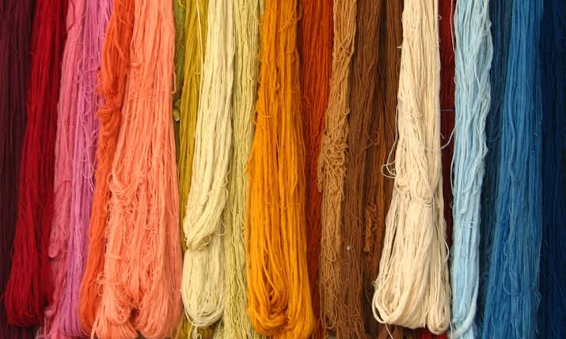
Fibres are the foundation of every fabric and garment.
Natural fibres
Natural fibres come from plants, animals, or minerals. Cotton is soft and comfortable and is widely used for everyday clothes. Wool provides warmth and is often used for winter garments. Silk is smooth and luxurious, while linen is cool and strong. These fibres are often comfortable and breathable, though some may require special care.
Natural fibres are valued for their comfort, appearance, and biodegradability. They are often preferred for clothing that needs to be soft and airy.
Natural fibres come directly from nature and offer comfort and breathability.
Synthetic fibres
Synthetic fibres are manufactured from chemicals and are designed for specific properties. Polyester is durable and wrinkle-resistant, nylon is strong and elastic, and acrylic is warm and affordable. These fibres are widely used in modern clothing because they are often inexpensive and easy to maintain.
Although synthetic fibres can be practical, they may be less breathable than natural fibres and may require careful selection according to the intended use.
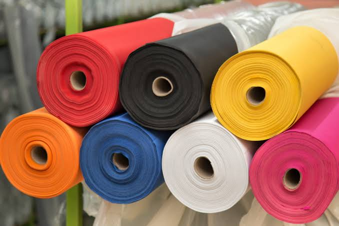
Synthetic fibres are man-made materials designed for strength, durability, and versatility.
Fabric construction
Fabric construction is the way fibres are turned into cloth. This may involve weaving, knitting, felting, or non-woven bonding. Woven fabrics are made by interlacing warp and weft threads, while knitted fabrics are formed by looping yarns together. These methods affect the appearance, elasticity, and strength of the fabric.
Different construction methods create different types of materials suitable for various garments and uses.
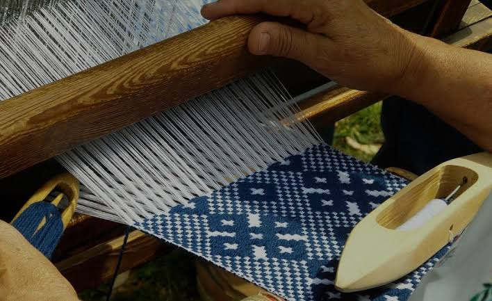
Fabric construction determines the texture, strength, and look of cloth.
Fabric properties
Fabric properties include strength, absorbency, elasticity, drape, warmth, and shrinkage. These properties influence how fabric behaves when worn and washed. A fabric that is soft, absorbent, and breathable is suitable for everyday clothing, while a strong and water-resistant fabric may be better for outerwear.
Knowing fabric properties helps in choosing the right cloth for a specific garment.
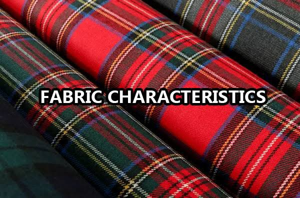
Fabric properties guide the choice of material for clothing and textile use.
Clothing Construction
Clothing construction is the process of turning fabric into garments. It includes taking body measurements, drafting patterns, cutting materials, sewing pieces together, and finishing the garment. Good construction makes clothing fit properly and last longer.
This skill is important both in fashion design and in everyday sewing. It transforms fabric into useful and attractive clothing.
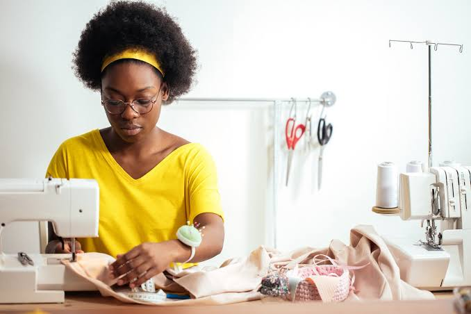
Clothing construction turns fabric into wearable garments made with care and precision.
Pattern drafting
Pattern drafting is the process of creating a pattern from body measurements or a design idea. A pattern acts as a guide for cutting fabric and shaping the garment. Accurate patterns are essential for proper fit and style.
Pattern drafting may be done by hand or with computerized design tools. It is a critical step in clothing production.
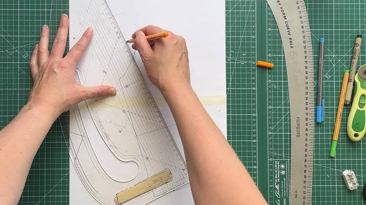
Pattern drafting gives the garment its shape and structure.
Cutting and sewing
Cutting and sewing are practical activities involved in garment making. Cutting requires precision so that pieces match the pattern and fabric grain. Sewing joins the pieces using suitable stitches and seams. The quality of stitching affects durability and appearance.
Proper cutting and sewing techniques produce neat, strong, and attractive garments.
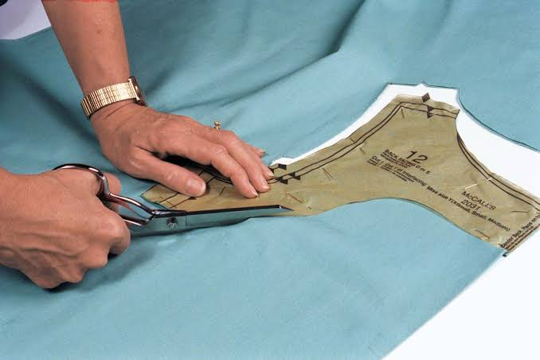
Cutting and sewing bring the garment pieces together into a finished product.
Finishing techniques
Finishing techniques include hemming, pressing, adding buttons, zips, embroidery, and trimming. These steps improve the final appearance of the garment and make it more comfortable to wear. Good finishing can make a simple garment look professional.
Finishings also affect durability, because strong hems and secure fasteners increase the lifespan of clothing.
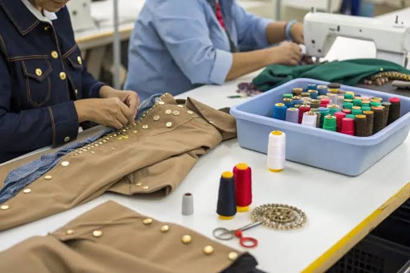
Finishing techniques improve the look, quality, and durability of garments.
Garment fitting
Garment fitting is the process of checking whether the garment fits the body properly. It involves adjusting seams, darts, openings, and length to achieve comfort, proportion, and ease of movement. A well-fitted garment looks better and feels more comfortable.
Fitting is important in both custom sewing and mass production. It helps create garments that flatter the wearer and meet their needs.
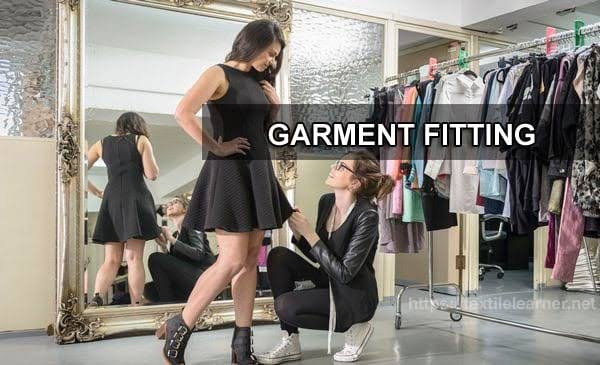
Garment fitting ensures the clothing is comfortable and well-shaped.
Care and Maintenance
Care and maintenance are necessary for keeping clothing clean, attractive, and long-lasting. This includes washing, drying, ironing, storing, and repairing garments. Different fabrics require different care methods. Proper care extends the life of clothing and saves money.
Good maintenance also preserves the fabric’s appearance and prevents damage from dirt, moisture, and insects.

Care and maintenance preserve the quality and usefulness of clothing.
Laundry
Laundry involves washing clothes to remove dirt and sweat. It includes sorting clothes, choosing the right water temperature, using suitable detergents, and drying them properly. Correct laundry methods prevent colour fading, shrinkage, and damage to fabrics.
Laundry keeps garments clean and fresh for regular wear.
Ironing
Ironing removes wrinkles and helps garments look neat and tidy. It also helps maintain the shape of the fabric and makes clothing more presentable. Different fabrics require different ironing temperatures to avoid scorching or shrinking.
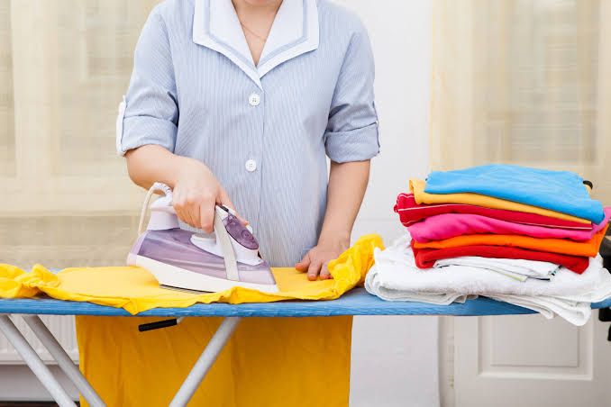
Ironing improves the look and neatness of clothing.
Storage
Storage keeps clothes protected when they are not being worn. It involves folding, hanging, dusting, and keeping garments away from insects and moisture. Good storage reduces creasing and damage while keeping clothes ready for use.
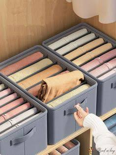
Proper storage keeps garments safe, neat, and ready for use.
Repair and mending
Repair and mending involve fixing holes, replacing buttons, sewing loose hems, or patching worn areas. These practices extend the life of clothing and reduce the need for replacement. They also promote sustainability and help save money.
for use.
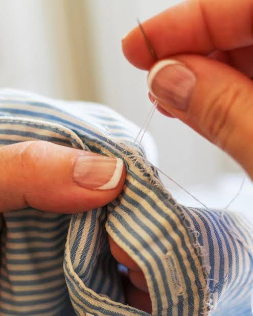
Repair and mending make clothing last longer and reduce waste.
Fashion and Design
Fashion and design are concerned with the creation of attractive and wearable clothes. Design involves selecting colours, shapes, textures, and ornamentation. Fashion reflects culture, personality, and changing trends. Good design combines beauty with practicality.
Fashion choices influence confidence, identity, and social appearance. Clothing is both functional and expressive.
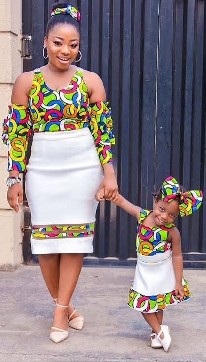
Fashion design combines creativity with practicality to create pleasing garments.
Colour and line
Colour and line are important elements of design. Colour affects mood, appearance, and visual balance, while line influences shape and movement in clothing. Designers use these elements to create attractive garments that suit the wearer and the occasion.
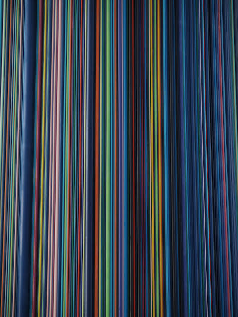
Colour and line">Colour and line shape the visual impact of clothing.
Design principles
Design principles include balance, proportion, rhythm, emphasis, and harmony. These principles guide how garment features are arranged to create a pleasing overall effect. They help designers create clothes that are balanced, comfortable, and attractive.
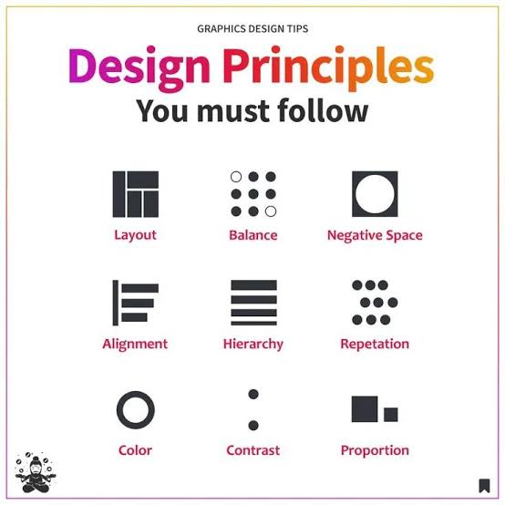
Design principles">Design principles help organize visual elements into attractive garments.
Fashion trends
Fashion trends are changing styles, colours, and shapes that become popular over time. Trends influence what people buy and wear, but personal style should also reflect comfort and suitability. Studying trends helps designers and consumers understand the fashion industry.
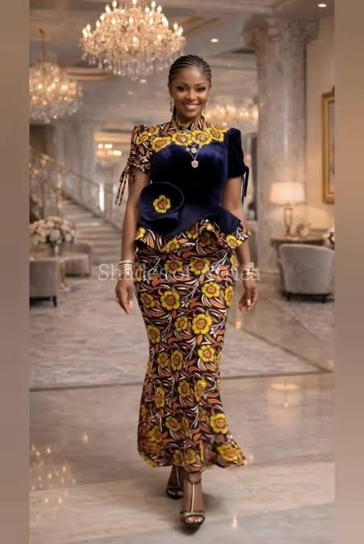
Fashion trends">Fashion trends reflect changing tastes and social influences.
Clothing selection
Clothing selection is the process of choosing garments that suit the purpose, climate, budget, and person wearing them. Good selection ensures comfort, modesty, durability, and suitability. The choice of clothing also reflects personal identity and social expectations.
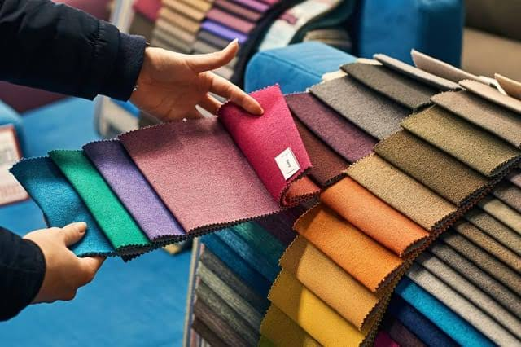
Clothing selection">Clothing selection involves choosing garments that are appropriate and practical.